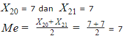

Materi Penjelasan Modus Median Mean dan contoh soal
Ukuran pemusatan data adalah sembarang ukuran yang menunjukkan pusat segugus data, yang telah diurutkan dari yang terkecil sampai yang terbesar atau sebaliknya dari yang terbesar sampai yang terkecil
Salah satu kegunaan dari ukuran pemusatan data adalah untuk membandingkan dua (populasi), karena sangat sulit untuk membandingkan masing-masing anggota dari masing-masing populasi
Rata - rata atau Mean
Rata-rata disebut juga mean dengan lambang x ̅ (dibaca x bar). Dengan data tunggal, kita mengumpulkan atau memperoleh suatu data apa adanya (bisa berurutan atau acak) dan tidak mengelompokkannya ke tabel frekuensi. Contoh data tunggal :
Nilai Ujian Matematika kelas VIII-A :
| 5 | 9 | 7 | 8 | 6 | 5 |
| 6 | 8 | 9 | 5 | 7 | 8 |
| 7 | 9 | 8 | 6 | 6 | 5 |
| 8 | 8 | 6 | 5 | 7 | 5 |
| 7 | 8 | 6 | 5 | 5 | 7 |
5,6,7,8,9 dari data diatas disebut datum atau masing-masing angka yang ada pada suatu data. Untuk memperoleh nilai rata-rata kita bisa membagi jumlah semua nilai atau datum-nya dengan banyaknya data. Kita bisa menentukan rata-rata data di atas dengan menggunakan rumus berikut
Lalu bagimana jika kamu harus ngumpulin nilai dari 200 orang? Pastinya sangat tidak efisien. Solusinya kita bisa mengelompokkan data atau nilainya dengan tabel frekuensi atau bisa juga dibilang data tunggal berkelompok. Misalnya :
| Nilai | 5 | 6 | 7 | 8 | 9 |
| Frekuensi | 14 | 25 | 31 | 2 | 10 |
Untuk rumus data tunggal berkelompok, bisa ditulis seperti ini:
Contoh Soal
1. Tentukan rata-rata data berikut : 8,3,4,7,6,8,6,7,9,7
Penyelesaian :
Banyaknya data = n = 10
(x ̅= 8+3+4+7+6+7+9+7 )/10
= (65)/10
= 6,5
2. Data nilai ulangan harian IPA kelas VIII-D. Berapa banyak siswa di kelas itu yang nilainya lebih dari rata-rata?
Penyelesaian:
Cari dulu nilai rata-rata pakai rumus data tunggal berkelompok
Diperoleh nilai rata-ratanya adalah 6,625. Karena yang ditanya di soal adalah banyak siswa yang nilainya di atas rata-rata, maka nilainya ada 7 sampai 10. Kalau kita total semua jumlah siswanya, ada sebanyak 21 siswa.
Median (Me)
Median adalah datum yang letaknya di tengah dari suatu data, tapi dengan syarat datanya sudah diurutkan dari yang terkecil sampai terbesar. Nah, pada bahasan median ini kamu bisa perhatikan jumlah data yang ada, misal datanya itu ganjil atau genap.
Brikut rumus yang akan digunakan untuk mencari nilai median :
Untuk data yang berjumlah ganjil kita bisa langsung menambil angka tengahnya, tapi untuk data yang berjumlah genap akan ada 2 angka yang berada ditengah. Supaya bisa memperoleh nilai mediannya, kita herus menggunakan rumus yang berbeda.
Contoh Soal
1.Median dari data: 7, 8, 8, 9, 4, 3, 7, 9, 5, 7, 6, 5, 6
Penyelesaian:
Ingat ! urutkan nilainya dari terkecil sampai terbesar
3, 4, 5, 5, 6, 6, 7, 7, 7, 8, 8, 9, 9 (n =13 termasuk data ganjil)
Maka diperoleh hasilnya adalah 7.
2. Median dari data berikut adalah ...
Penyelesaian:
Hitung banyaknya data yang ada

Jadi diperoleh nilai mediannya yaitu 7.
Modus (Mo)
Nah untuk topik yang ketiga ini pasti udah nggak asing lagi kan? Yap, modus atau nilai yang sering muncul, biasanya dilambangkan dengan Mo. Jika data yang kamu peroleh merupakan data tunggal berkelompok atau data yang dikelompokkan ke dalam tabel maka kamu bisa langsung lihat datum atau nilai dengan frekuensi paling tinggi. Jika data tunggal biasa kamu bisa tabel turus/ tally.
Contoh Soal
Modus dari data berikut adalah:
102, 108, 106, 107, 108
105, 107, 105, 108, 106
106, 106, 107, 102, 105
105, 102, 106, 105, 106
107, 106, 105, 106, 102
105, 107, 107, 106, 105
106, 106, 105, 107, 102
Penyelesaian :
Agar lebih mudah, buat dalam bentuk tabel turus seperti ini:
Kategori: Matematika, Tags: #pemusatandata, #modus, #median, #mean